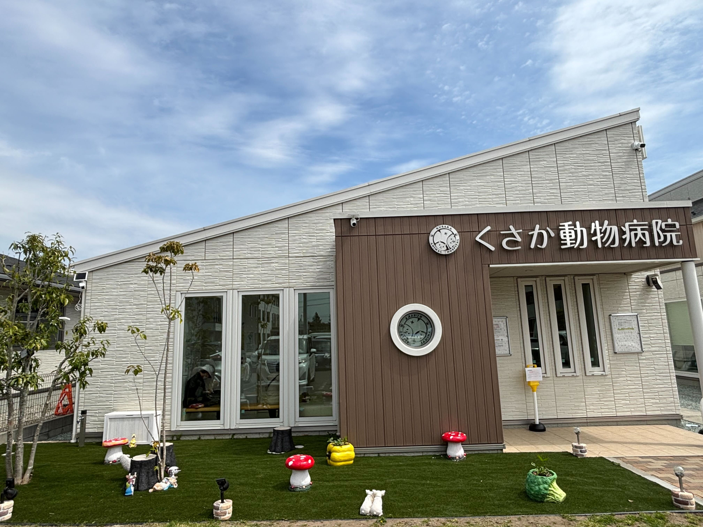
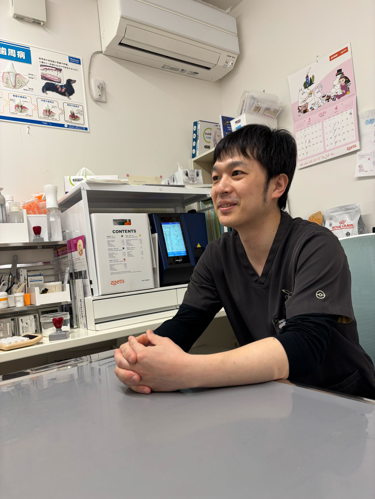
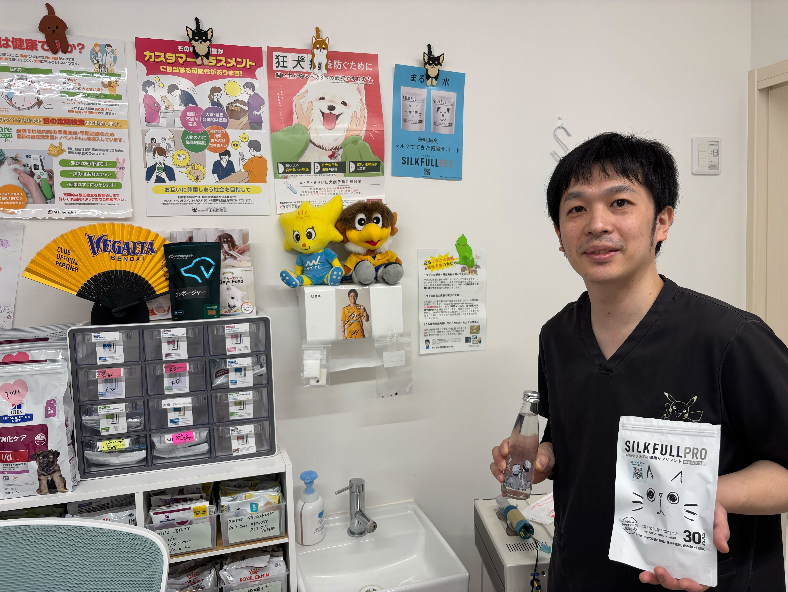
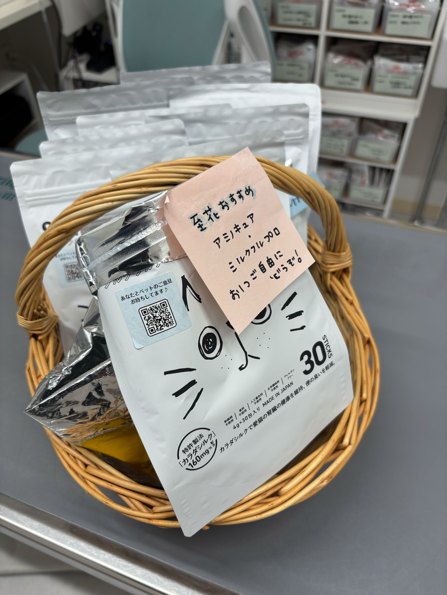

シルクフルプロを実際に臨床現場で活用している先生方に、製品情報だけでは見えてこない「手触り感のある話」を伺うインタビューシリーズ。今回は、仙台近郊で開業されている草坂智章先生にお話を伺いました。
腎臓病の猫を持つ飼い主でもあり、臨床医でもある草坂先生。ご自身の猫が亡くなる直前までシルクフルプロを使い続けた実体験を持ち、患者さんへの推奨にもその経験がにじんでいます。
なぜシルクフルプロを選んだのか。どんなシーンで、どんな言葉で飼い主さんに勧めているのか。そして、この製品が開いた「獣医療の新しい境地」とは何か。腎臓ケアから食糞対策まで、草坂先生の率直な言葉をお届けします。

「味を邪魔しない」から、最後まで使い続けられた
シルクフルプロを患者さんに勧めるのは、どんな場面ですか？
やはり何か吸着したい時ですね。シルクフルの多孔性の構造を活かして、具体的には腎臓病の子で使うことが多いです。
従来の吸着剤——活性炭やコバルジンなどもありますが、正直なところ嗜好性がいいとは言えません。フードに混ぜても元のご飯の味を邪魔してしまって、結局食べてくれないということが起きるんです。
その点、シルクフルプロは無味無臭で、テクスチャーがすごくいい。サラッとしているので、フードに混ぜても全然嫌がらない。しかもお薬と違って食間に飲ませる必要もないので、制限が少ない。
結果として、嗜好性の問題で飲めなかった従来品よりも、実際に体に入っている量はむしろ多いんじゃないかと思うようになりました。
先生ご自身の猫にも使われていたそうですね。
ええ。うちの腎臓病の猫は今年の3月末に亡くなったのですが、最後までシルクフルプロを飲んでいました。
末期にはチューブフィーディングになっていたんですが、鼻からの経鼻カテーテルにも入れることができたんです。チューブフィーディングだとロイヤルカナンのリキッドなどを使いますが、カロリーを考えると少し濃いものを入れてあげたい。でもそうすると吐き気が出やすくなる。そこにシルクフルを混ぜることで、飼い主目線でも少し安心感がありましたね。
自分自身がそういう体験をしているからこそ、患者さんにも自然と「うちの猫も使っていたんですよ」とお伝えできる。そうすると皆さん、すごく共感してくださるんです。
「うちの猫も使っていたんですよ」
と伝えると、飼い主さんはすごく共感してくれる。

便の匂いが消えた。食糞がなくなった。
今までにないリアクション
腎臓ケア以外でも手応えを感じた場面はありますか？
ありますね。腎臓病から少し離れた話になりますが、「便の匂いがなくなった」という声は犬でも猫でもいただいています。さらに驚いたのは、「食糞がなくなった」という声です。
サンプルを2〜3袋渡しただけで、「もう全然大丈夫だった」と言ってくれた飼い主さんもいました。
便の匂いがなくなると、なぜ食糞がなくなるのでしょうか？
食べているフードの消化率に関係していると考えています。消化率が悪いと、食べたものの匂いがそのまま便に出てしまう。好きなご飯の匂いが便からするわけですから、それを食べてしまう子がいるのは、ある意味自然なことかもしれません。
シルクフルは液体なので、フード全体に満遍なく広がる。その結果、匂いの元になる成分を効率的に吸着しているのではないかと考えています。
コバルジンでも同じことを試したことはありますし、腸内細菌叢へのアプローチでフラジールを使ったり、消化剤を処方したり、消化率の良いフードに変えてみたり——いろんなことを今までやってきました。でも、飼い主さんのリアクションが一番良かったのは、シルクフルを使い始めてからなんです。
「良かったよ」と飼い主さんと喜びを共有できた。そういう経験は、正直この分野では初めてでしたね。

「臭くなるよ」と先に伝える。
そこから会話が始まる
便の匂いや食糞の相談って、飼い主さんから自発的に来るものですか？
もちろん飼い主さんから相談されることもありますが、実は私の方から先に伝えることが多いんです。
たとえば、高タンパクのフード——ビルバックさんの製品やヒルズの缶詰系などを処方するとき、「このフードは便が臭くなりますよ」と事前にお話しするんです。そうすると、「何か対策はないですか？」と飼い主さんの方から聞いてくれる。
以前はそう聞かれても、正直これといった回答がなかった。ビルバックさんが出しているマウスウォッシュのアクアデントなんかも試しましたが、飼い主さんのリアクションはいまひとつでした。しかも水に混ぜると風味が出てしまって、飲まない子も多い。
シルクフルは全然そこを邪魔しない。混ぜても食べてくれる。だからこそ、自信を持って勧められるようになりました。
サンプルから始まる、無理のない推奨ステップ
実際にはどんなステップで飼い主さんに勧めていますか？
遠方から来ている方や、ちょっと余裕がある方には「とりあえず30日分やってみましょう」とお伝えすることもあります。
一方で、費用面で慎重な方もいらっしゃいます。そういう方には、うちの猫の遺品のような形で少し残っていたサンプルをお渡しして、「ちょっと試してみてください」と。そこから1週間分、まとめ買いへとつながるケースもあります。
基本的にはこちらからガンガン売り込むというよりは、飼い主さんの方から「ください」と言ってもらえるのを待つスタイルが多いですね。
あと、実は私自身、人間用のシルクフルも飲んでいるんですよ。コレステロールが高いので。「自分でも飲んでます」と言うと、飼い主さんも興味を持ってくれて、ペット用と一緒に人間用も買ってくださる方がいたりします。

まだ「サプリメント」の域は超えていない。
だからこそ、期待したい
最後に、製品への今後の期待をお聞かせください。
正直に言うと、シルクフルプロはまだサプリメントの域を超えていないと感じています。
うちの亡くなった猫でも、BUNやクレアチニンの数値が目に見えて下がるという効果は実感できませんでした。他の先生のところでは数値が下がった子もいるのかもしれませんが、私自身の経験としてはまだそこまでではない。
だからこそ、今後もっとデータが蓄積されて、動物用医薬品に近いステージまで来てくれたら、説得力が格段に増すと思います。
ただ、一つ言えるのは、便の匂いを抑えるという切り口は、これまでの獣医療にはなかった新しい境地を開いたということ。便の匂いだけでなく、肛門腺の匂いや体臭に悩む飼い主さんは多いですが、今までそれに対する有効な手立てがほとんどなかった。
シルクフルがそこに一石を投じた意味は大きい。
今後、研究者の方々がさらに新しい可能性を見つけてくださることにも期待しています。
草坂先生のインタビューで印象的だったのは、「飼い主さんと喜びを共有できた」という言葉でした。臨床の現場では、数値の改善やエビデンスがもちろん大切です。しかし、飼い主さんが実感できる変化——「便の匂いが消えた」「食糞がなくなった」——が、信頼と継続の起点になっている。
製品スペックだけでは伝わらない、現場の温度感をお届けできていれば幸いです。
北里大学卒業（2011年）。仙台近郊にて開業。腎臓ケアを中心に、吸着剤や腸内環境改善に関する幅広いアプローチを臨床に取り入れている。ご自身もペット用・人間用ともにシルクフルを愛用。